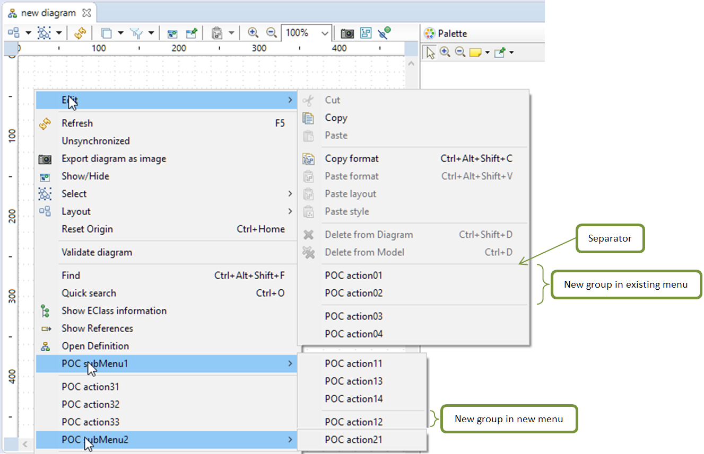
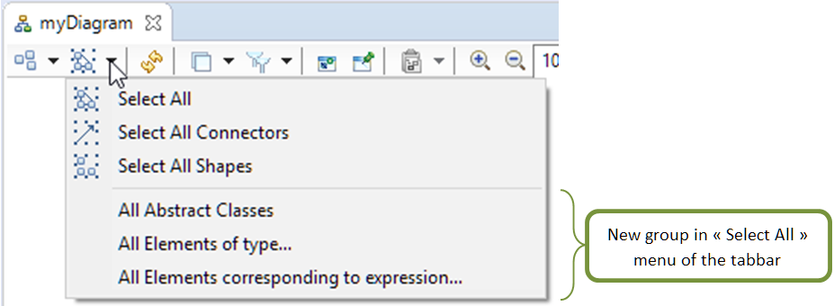
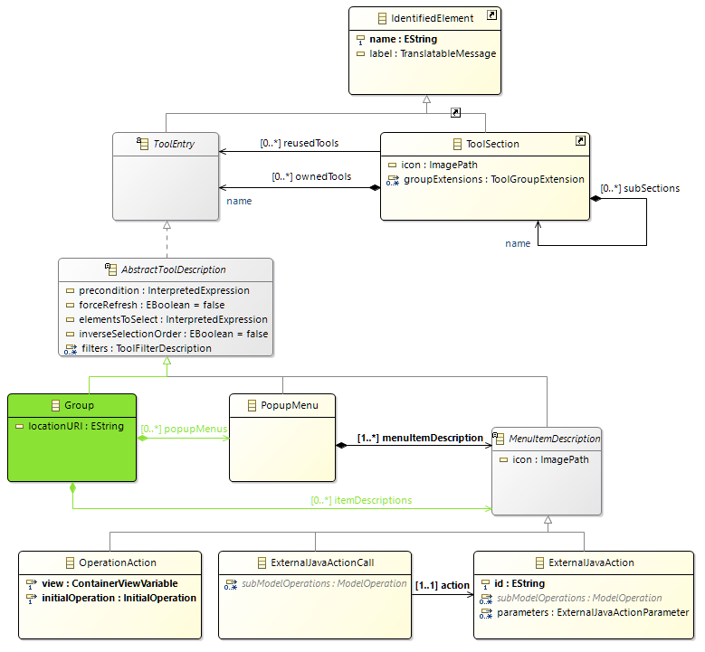
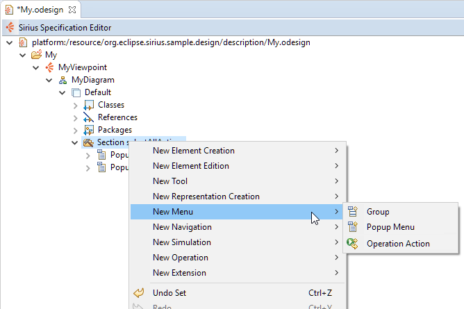

Summary: The goal of the evolution is to improve the capability of the
Popup Menu defined in Sirius.
| Version | Status | Date | Authors | Changes |
|---|---|---|---|---|
| v0.1 | DRAFT | 2018-06-13 | lredor | Initial version. |
Relevant tickets (links to the Bugzilla tickets which are related to the change):
The bugzilla 534301 is the POC of this current evolution. It only concerns diagram popup menu. Another issue exists, bugzilla 535946, to merge:
PopupMenu declared in the viewpoint.ecore meta-model and used in diagram representation
TreePopupMenu declared in the tree.ecore meta-model and used in tree representation
The new features covered by this evolution are:
Popup Menu) or actions (
Operation Action) in this group. For the UI aspect, a separator line is drawn between each group.
Sample of menu contributions with group:

Sample of tabbar contributions:

The notion of
Group will be added in the meta-model.
As
PopupMenu, a
Group can be added in a tool section of a diagram.
As
PopupMenu, the properties
elementsToSelect and
inverseSelectionOrder will be filtered in the UI (in the Properties view).
A
Group can contain 0 or multiple
PopupMenu. A
Group can contain 0 or multiple
MenuItemDescription (ie actions).
A
Group has an id (the field
name inherited from
IdentifiedElement). It also has a
label, but the field is not mandatory and not really used.
A
Group has a
locationURI: an URI specification that defines the insertion point at which the group will be added.
The format for the URI is comprised of two basic parts:
We can imagine a third part: Query – This field allows fine-grained definition of the specific location within a given menu. It has the form «[placement]=[id]» where placement is one of «before», «after», or «endof» and the id is expected to be the id of another contribution in the menu. This third part is not in the scope of this evolution.
A
Group can be added as a child of a
PopupMenu. In this context, the
locationURI must be null.
Extract of the Meta-Model with the changes in green:

Here is a list of some technical necessary changes detected during the specification:
org.eclipse.sirius.editor.properties.filters.tool.abstracttool.AbstractToolDescriptionElementsToSelectFilterSpec and
org.eclipse.sirius.editor.properties.filters.tool.abstracttool.AbstractToolDescriptionInverseSelectionOrderFilterSpec to filter the properties
elementsToSelect and
inverseSelectionOrder in the Properties view.
org.eclipse.sirius.diagram.description.tool.provider.ToolGroupItemProvider.collectNewChildDescriptors(Collection<Object>, Object): To remove the
Group creation menu from the
ToolGroup.
org.eclipse.sirius.diagram.ui.tools.internal.menu.PopupMenuContribution: To replace all the code from the POC with the new concept of
Group
org.eclipse.sirius.editor.tools.internal.menu.child.MenuToolsMenuBuilder: To add the
Group in first position of the «New Menu» menu on a
Tool Section.
This evolution does not change any API. It adds new APIs allowing the capability to define
Group in the VSM file.
For the specifier, the «New Menu» menu on a
Tool Section displays the
Group in first:

A note will be added in the New and Noteworthy.
A chapter will be added in the
Sirius Specifier Manual near the
Popup Menu
chapter in
Tools section.